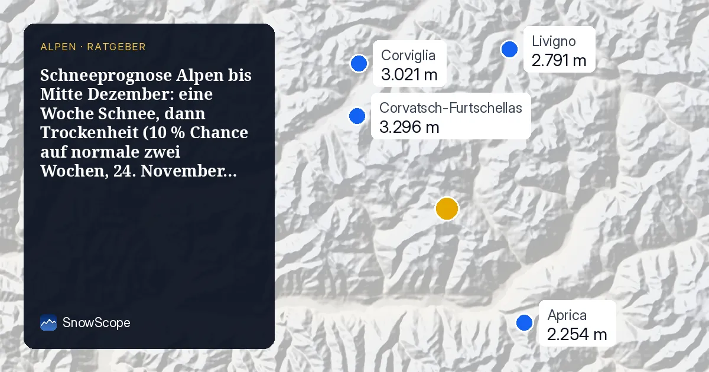
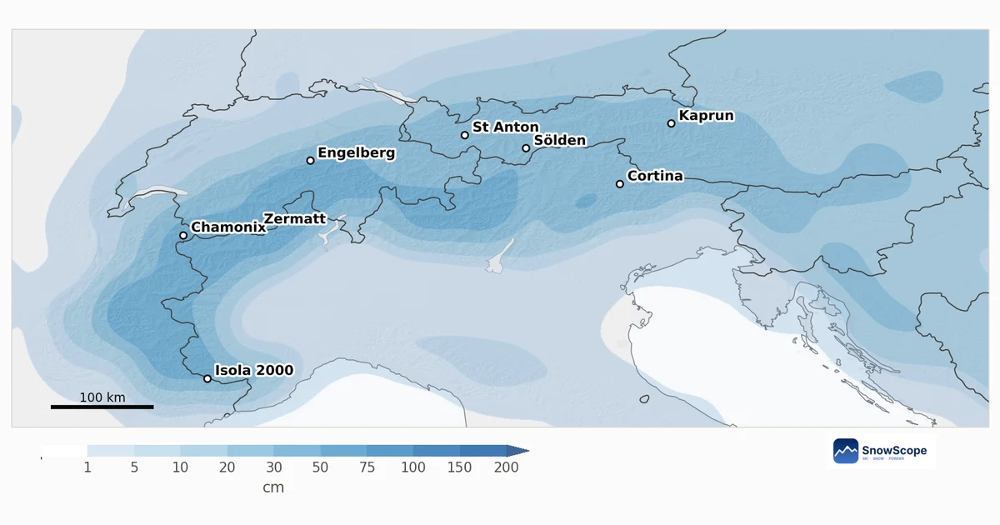
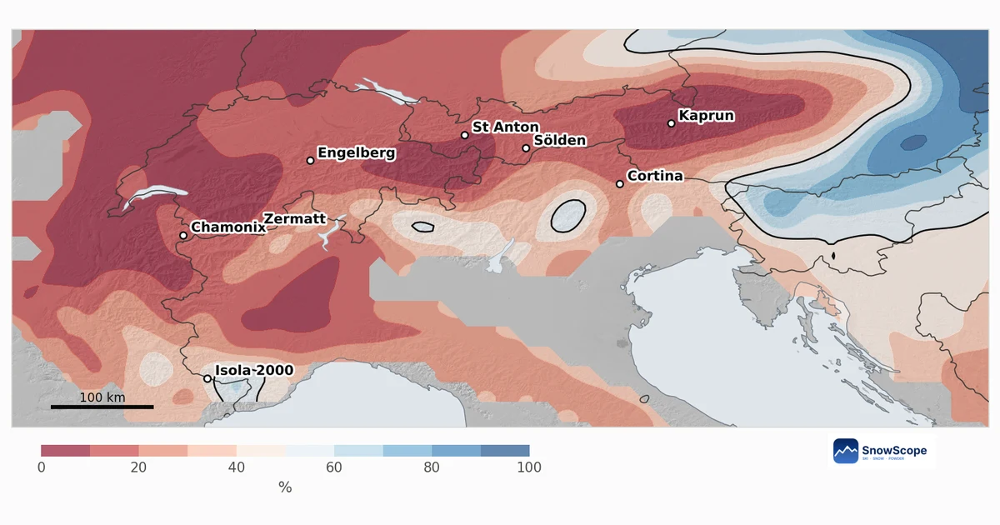
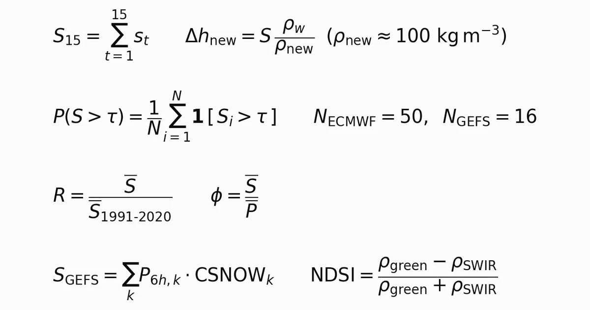

Schneeprognose Alpen bis Mitte Dezember: eine Woche Schnee, dann Trockenheit (10 % Chance auf normale zwei Wochen, 24. November 2026)
Ende November sind die Alpen weiß geworden: MODIS der NASA sah in den letzten 8 Tagen Schnee auf 84 % des wolkenfreien Bodens über 1.000 m, und es kommt mehr. Das ECMWF-Ensemble vom 24. November (50 Mitglieder) gibt den alpinen Gitterzellen zwischen dem 24. und 30. November 19,1 mm Schneewasser, rund 19,1 cm Neuschnee, etwas mehr als das Mittel 1991-2020 von 17,8 mm. Dann wird es trocken: 9 mm vom 1. bis 8. Dezember gegenüber normal 21,9 mm. Über die zwei Wochen liegen nur 10 % der Mitglieder über dem Mittel. Ausnahme sind die Südwestalpen: in Isola 2000 sind es 74 %.
Die Live-Schneeprognose für Alps in der SnowScope-AppSchneehöhen, Pulverschnee-Alarme und 3D-Karte, gratis.

Schnee am Boden: was NASA MODIS sieht
Wolken machten die letzte Woche schwer lesbar: am 17. und 22. November war nur 2 % des Berglands bei beiden Überflügen frei. Mit dem letzten klaren Blick jedes 500-m-Pixels zwischen dem 16. und 23. November blieben 32 % des Bodens über 1.000 m unsichtbar; der Rest ergibt 69.034 km² Schnee und 12.983 km² aperen Boden.
Nach Höhe: 70 % weiß zwischen 1.000 und 1.250 m, 87 % zwischen 1.500 und 1.750 m, 97 % zwischen 2.000 und 2.250 m und 99 % darüber. Die Schneefallgrenze am Boden liegt also bei etwa 1.000 m. MODIS erkennt Schnee über den NDSI, (Grün - SWIR) / (Grün + SWIR) (Hall et al. 2002); Wald verdeckt unter etwa 1.500 m einen Teil des Schnees, die unteren Stufen sind eher unterschätzt.

24. bis 30. November: die Schneewoche
Die erste Woche ist der sichere Teil: über die zwei Wochen geben alle 50 Mitglieder Zermatt, Cortina und Isola 2000 mehr als 10 mm Schneewasser, das meiste davon jetzt. Mediane vom 24. bis 30. November: Isola 2000 36,6 cm, Cortina 26,9 cm, Zermatt (Zelle auf 2.877 m) 26,5 cm, Sölden 19,7 cm, Engelberg 19 cm, Chamonix 17,8 cm, St. Anton 15,4 cm und Kaprun 10,5 cm.
Neuschneehöhe = Schneewasser × ρw / ρneu; mit ρneu um 100 kg/m³ (Judson und Doesken 2000) ergibt 1 mm Wasser etwa 1 cm Schnee. Der Schneeanteil am Niederschlag, φ = S / P, zeigt, wo es weiß bleibt: 99 % in der Zermatter Zelle, 98 % in Sölden, 96 % in Cortina, aber 75 % in der tieferen Zelle von Chamonix.

1. bis 8. Dezember: die Trockenphase
In der zweiten Woche sind sich die Mitglieder fast einig: weniger Schnee. Das regionale Mittel fällt auf 9 mm gegenüber normal 21,9 mm; Mediane: Chamonix 5,7 cm, Zermatt 5,5 cm, Cortina 2,3 cm, Isola 2000 3,9 cm, im Norden etwas mehr, Engelberg 12 cm und Kaprun 9,6 cm.
Über die 15 Tage liegt die Chance auf mehr Schnee als normal bei 6 % in Chamonix (Median 23,4 cm gegenüber 67,9 cm), 8 % in Zermatt, 12 % in St. Anton, 18 % in Cortina, 24 % in Sölden und 22 % in Engelberg. Von allen Bergzellen über 1.000 m haben 82 % eine Chance von 40 % oder weniger, nur 9 % von 60 % oder mehr, fast alle in den See- und Cottischen Alpen.

9. bis 14. Dezember: NOAA GEFS
Nach Tag 15 nutzen wir die 16 vollständigen Mitglieder des NOAA-GEFS vom 24. November und zählen 6-Stunden-Niederschlag nur, wenn das Schnee-Flag gesetzt ist (S = Σ P6h · CSNOW). Über die Alpen liegen 12 % der Mitglieder über dem Mittel vom 9. bis 14. Dezember, im Schnitt 11 mm gegenüber 16,3 mm. Der Norden schneidet etwas besser ab: Kaprun 23,4 mm gegenüber 20,2 mm, St. Anton 19,7 mm gegenüber 19,7 mm, Isola 2000 nur 0,9 mm gegenüber 7,5 mm. Nach drei Wochen ist das eine Neigung der Chancen, keine Vorhersage (Vitart und Robertson 2018).
NAO und Arktische Oszillation
Die GEFS-Prognose hebt die NAO am 26. November auf +0,97 und senkt sie bis zum 4. Dezember auf -0,29. Die Arktische Oszillation fällt stärker, auf -1,34 am 2. Dezember, mit 77 % negativen Mitglieds-Tagen ab Tag 8. Eine negative AO heißt schwächerer Polarwirbel und Kaltluft nach Süden, oft mit Hochdruck über Mitteleuropa: kalt und trocken in den Alpen, Schnee nur bei einem Mittelmeertief (Thompson und Wallace 1998; Hurrell 1995).
Die Zahl der Schneetage in der Schweiz ist Ende der 1980er-Jahre sprunghaft gesunken, getrieben von der Temperatur (Marty 2008, SLF); das Mittel 1991-2020 enthält dieses wärmere Klima bereits. Für die Lawinengefahr nach dem Schneefall dieser Woche bleibt das Lawinenbulletin des SLF und der anderen Warndienste die Referenz.

Wie weit man den Zahlen trauen kann
Jede Zahl gilt für eine Zelle von 0,25°, etwa 28 km Nord-Süd und 19 km West-Ost. Die mittlere Höhe einer Zelle kann weit von der eines Skigebiets entfernt sein: die Zelle von Chamonix liegt auf 1.507 m, die von Zermatt auf 2.877 m. Deshalb vergleichen wir jede Zelle mit ihrem eigenen Mittel 1991-2020. Die 50 Mitglieder sind gleich wahrscheinliche Zukünfte: 10 % sind 5 Mitglieder, real, aber nicht präzise.
Schneefall ist nur die halbe Geschichte. Wind, Sonne und Wärme verlagern und schmelzen Schnee; Durand et al. (2008) zeigen, dass das Schneewasser am Boden am besten aus Schneekarten und Energiebilanz rekonstruiert wird. Für die nächsten Tage sind eine Tagesprognose und die Berichte der Skigebiete das richtige Werkzeug.

Tipps für Skifahrer
- Bestes Fenster: direkt nach dem Schneefall dieser Woche; Anfang Dezember wird es ruhiger und sonniger.
- Die Südwestalpen (Isola 2000, Auron, Sestriere) haben die besten Chancen auf überdurchschnittliche zwei Wochen.
- Nach dem Schneefall vor jeder Variante das Lawinenbulletin lesen: Neuschnee auf alten Frühwinterschichten ist heikel.
- Um den 1. Dezember erneut prüfen: dann werden die Chancen für den 9. bis 14. Dezember viel schärfer.
Quellen und Nachweise
- ECMWF open data: IFS ensemble forecasts (ENS), run of 24 November 2026 00 UTC, 0.25° grid, snowfall and total precipitation (CC BY 4.0) www.ecmwf.int/en/forecasts/datasets/open-data
- Zhou, X. et al. (2022). The development of the NCEP Global Ensemble Forecast System version 12. Weather and Forecasting 37, 1069-1084 doi.org/10.1175/WAF-D-21-0112.1
- NOAA Global Ensemble Forecast System (GEFS) open data on AWS: run of 24 November 2026 00 UTC, 0.5° grid, APCP and CSNOW registry.opendata.aws/noaa-gefs/
- Hersbach, H. et al. (2020). The ERA5 global reanalysis. Quarterly Journal of the Royal Meteorological Society 146, 1999-2049 (monthly means 1991-2020, Copernicus Climate Change Service) doi.org/10.1002/qj.3803
- NOAA Climate Prediction Center: daily NAO, AO, PNA and AAO index forecasts from the GEFS ensemble www.cpc.ncep.noaa.gov/products/precip/CWlink/
- Hurrell, J.W. (1995). Decadal trends in the North Atlantic Oscillation: regional temperatures and precipitation. Science 269, 676-679 doi.org/10.1126/science.269.5224.676
- Thompson, D.W.J. and Wallace, J.M. (1998). The Arctic Oscillation signature in the wintertime geopotential height and temperature fields. Geophysical Research Letters 25, 1297-1300 doi.org/10.1029/98GL00950
- Cassou, C. (2008). Intraseasonal interaction between the Madden-Julian Oscillation and the North Atlantic Oscillation. Nature 455, 523-527 doi.org/10.1038/nature07286
- Vitart, F. (2014). Evolution of ECMWF sub-seasonal forecast skill scores. Quarterly Journal of the Royal Meteorological Society 140, 1889-1899 doi.org/10.1002/qj.2256
- Vitart, F. and Robertson, A.W. (2018). The sub-seasonal to seasonal prediction project (S2S) and the prediction of extreme events. npj Climate and Atmospheric Science 1, 3 doi.org/10.1038/s41612-018-0013-0
- Marty, C. (2008). Regime shift of snow days in Switzerland. Geophysical Research Letters 35, L12501 (WSL Institute for Snow and Avalanche Research SLF) doi.org/10.1029/2008GL033998
- WSL Institute for Snow and Avalanche Research SLF: avalanche bulletin and snow maps www.slf.ch/en/
- Riggs, G.A., Hall, D.K. and Román, M.O. (2019). MODIS Snow Products Collection 6.1 User Guide. NASA / NSIDC nsidc.org/sites/default/files/c61_modis_snow_user_guide.pdf
- Hall, D.K., Riggs, G.A., Salomonson, V.V., DiGirolamo, N.E. and Bayr, K.J. (2002). MODIS snow-cover products. Remote Sensing of Environment 83, 181-194 doi.org/10.1016/S0034-4257(02)00095-0
- NASA Global Imagery Browse Services (GIBS): MODIS_Terra_NDSI_Snow_Cover and MODIS_Aqua_NDSI_Snow_Cover, 16-23 November 2026 www.earthdata.nasa.gov/engage/open-data-services-software/earthdata-developer-portal/gibs-api
- Copernicus DEM GLO-90 (European Space Agency, Copernicus programme) doi.org/10.5270/ESA-c5d3d65
- Durand, M., Molotch, N.P. and Margulis, S.A. (2008). Merging complementary remote sensing datasets in the context of snow water equivalent reconstruction. Remote Sensing of Environment 112, 1212-1225 doi.org/10.1016/j.rse.2007.08.010
- Judson, A. and Doesken, N. (2000). Density of freshly fallen snow in the central Rocky Mountains. Bulletin of the American Meteorological Society 81, 1577-1587 doi.org/10.1175/1520-0477(2000)081<1577:DOFFSI>2.3.CO;2
Zu diesen Zahlen
Schnee: ECMWF-Ensemble (50 Mitglieder, 0,25°) bis Tag 15, NOAA GEFS (16 Mitglieder, 0,5°) für Tag 16-21, verglichen mit dem Mittel 1991-2020 derselben Kalendertage. Schnee am Boden: NASA MODIS, letzter klarer Blick 16.-23. November.
Diesen Bericht zitieren
Für Forschung, Lehre oder Presse: Zahlen und Grafiken sind unter CC BY 4.0 mit dieser Quellenangabe frei nutzbar.
SnowScope (2026), Schneeprognose Alpen bis Mitte Dezember: eine Woche Schnee, dann Trockenheit (10 % Chance auf normale zwei Wochen, 24. November 2026), https://snowscope.app/blog/de/2026/11/alps-snow-outlook-next-3-weeks-ecmwf-noaa-24-november-2026.html, abgerufen am 2026-11-24
SnowScope (Atlas Labs). (2026, November 24). Schneeprognose Alpen bis Mitte Dezember: eine Woche Schnee, dann Trockenheit (10 % Chance auf normale zwei Wochen, 24. November 2026). SnowScope snow reports. https://snowscope.app/blog/de/2026/11/alps-snow-outlook-next-3-weeks-ecmwf-noaa-24-november-2026.html
BibTeX
@misc{snowscope2026alpssnowoutlooknext3week,
author = {{SnowScope (Atlas Labs)}},
title = {Schneeprognose Alpen bis Mitte Dezember: eine Woche Schnee, dann Trockenheit (10 % Chance auf normale zwei Wochen, 24. November 2026)},
year = {2026},
month = nov,
howpublished = {\url{https://snowscope.app/blog/de/2026/11/alps-snow-outlook-next-3-weeks-ecmwf-noaa-24-november-2026.html}},
note = {Published 2026-11-24 17:00 UTC; accessed 2026-11-24}
}· CC BY 4.0 · Methoden, Daten und Werkzeuge →
Alps folgen
Gratis: eine Nachricht, wenn Neuschnee kommt, und jeden Morgen die Vorhersage.